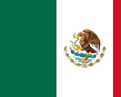

Étape 11 : Mexique 
Onzième étape du Trophée Jules Verne au Mexique, autour de Monterrey. Les coureurs effecturont environ 118,2 km, comprenant plusieurs ascensions marquées dans la zone de Monterrey : un sprint intermédiaire dans Monterrey même, puis l’enchaînement de cols proches de la Sierra environnante (Santa Catarina, Los Olmos, Los Encinos, Chipinque, El Mirador), demandant puissance et résistance en altitude. Le parcours part et revient à Monterrey, offrant un final potentiellement animé par de petites montées avant l’arrivée.